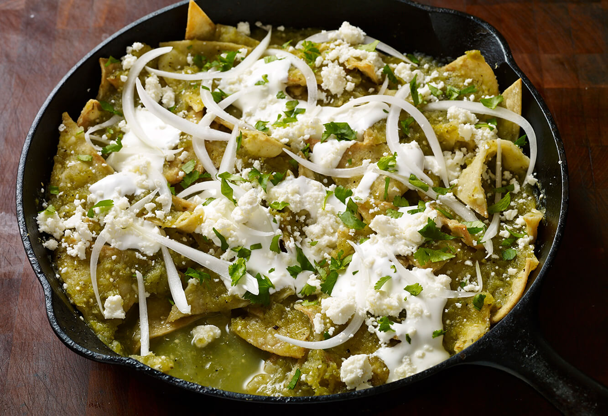

Chilaquiles

Description
Chilaquiles. Chee-lah-KEE-less! I mentioned I wanted to make chilaquiles to a Mexican friend the other day and you should have seen the smile and look of rapture that came over his face.
This is true Mexican comfort food, what your mom made you for breakfast when she had some stale tortillas that needed to get used up.
Ingredients
- 12 corn tortillas, preferably stale, or left out overnight to dry out a bit, quartered or cut into 6 wedges
- Corn oil, or other neutral oil for frying
- Kosher salt
- 1 1/2 to 2 cups red chile sauce or salsa verde, store-bought or homemade (see end of recipe for homemade versions)
- Sprigs of epazote, optional
- Avocado, sliced or roughly chopped
- 1 red onion, chopped
- Cilantro, chopped
Steps
- Fry the tortillas
- Heat the salsa
- Add fried tortillas to the salsa
- Pour the toppings on the chilaquiles